Film and stage composer in Amsterdam
Original scores for film, dance and theatre, written with Belle Doron, and sonic branding for Sparkasse and Bupa. Our song Out of Touch has passed 80 million streams.
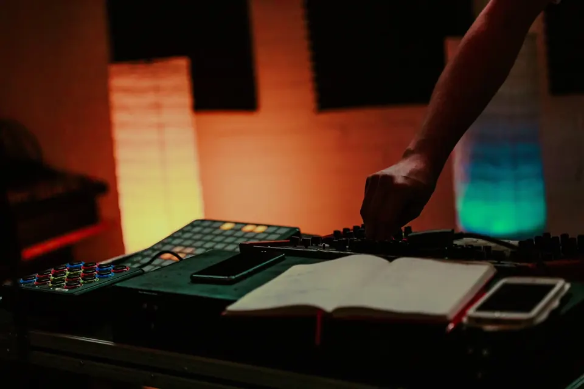
Showreel. Film, stage and brand work in one cut.
Play the showreel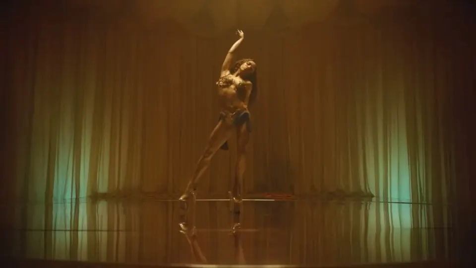
Scores and songs for film and series
With Belle Doron I write original scores for documentary and short film, Stay by Youp Kruysdijk among them. Our songs as CUT_ are licensed to series like The L Word.
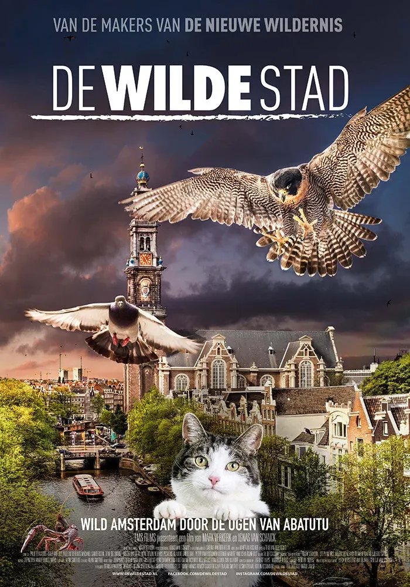
De Wilde Stad
Original score for a nature documentary, 2020
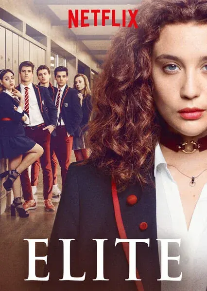
Élite, Netflix
Out of Touch in seasons 2 and 3, 2019
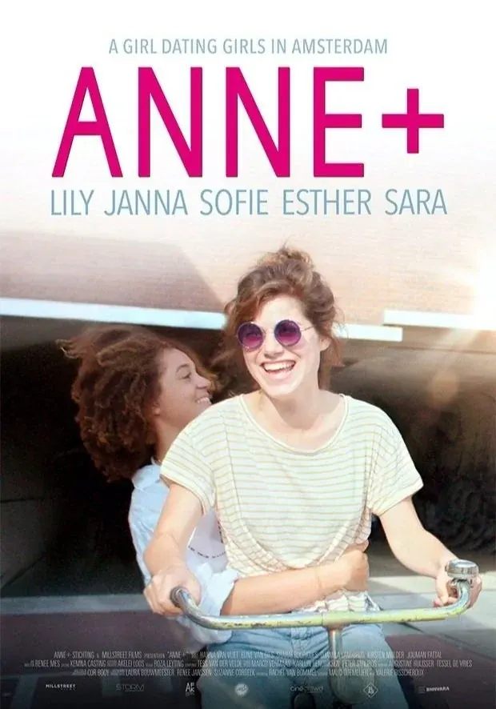
Anne+
Songs by CUT_ in seasons 1 and 2, 2018 and 2020
Live scores for dance and theatre
-
The Witch’s Mark, 2025
A 1.5-hour score for Belle and The Beats, played live: a witch trial told in music, dance and shibari.
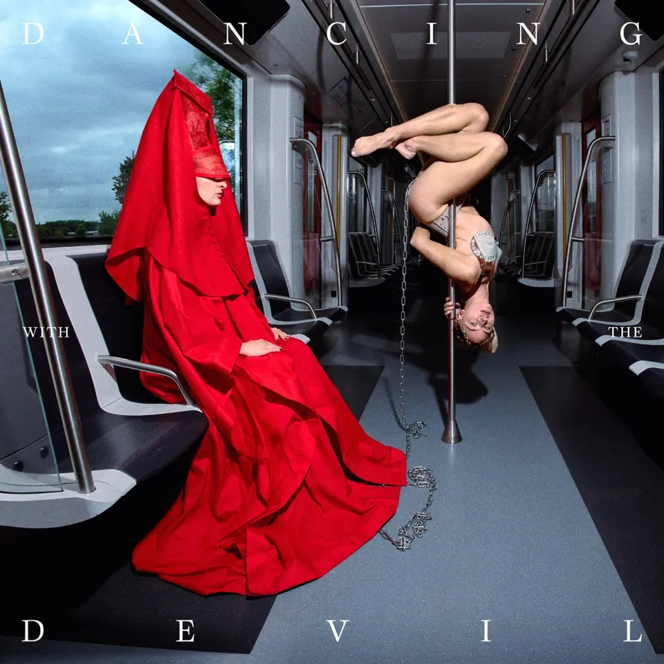
-
Blind to the Depths, 2023
A full-length dance piece by Paxton Ricketts and Madoka Kariya, premiered at Sadler’s Wells in London.
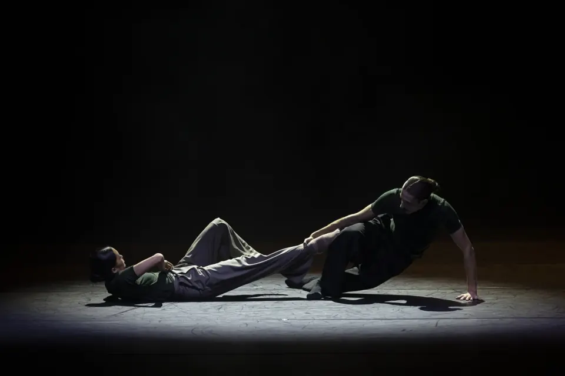
-
The Ritual, 2024
A CUT_ show with scent, taste and touch, made for audiences with a disability. 15 shows, Sziget among them.
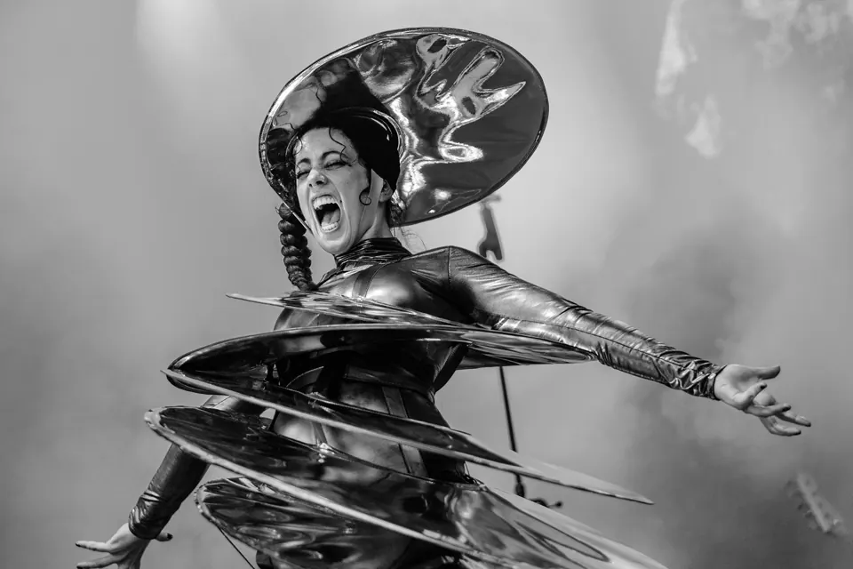
Music for Nederlands Dans Theater and others
New pieces by NDT dancers in The Hague, and shows where the dancers and the music react to each other live.
- Switch, Nederlands Dans Theater
Zuiderstrandtheater, The Hague
2019 - Switch: On the Move
Lucent Danstheater, The Hague
NDT - Switch, Nederlands Dans Theater
New work by the company’s dancers
2021 - RE:HUMANIZE
Immersive show with choreographer Guido Dutilh
2020 - Momentum: Lost & Found
Contemporary dance
CUT_
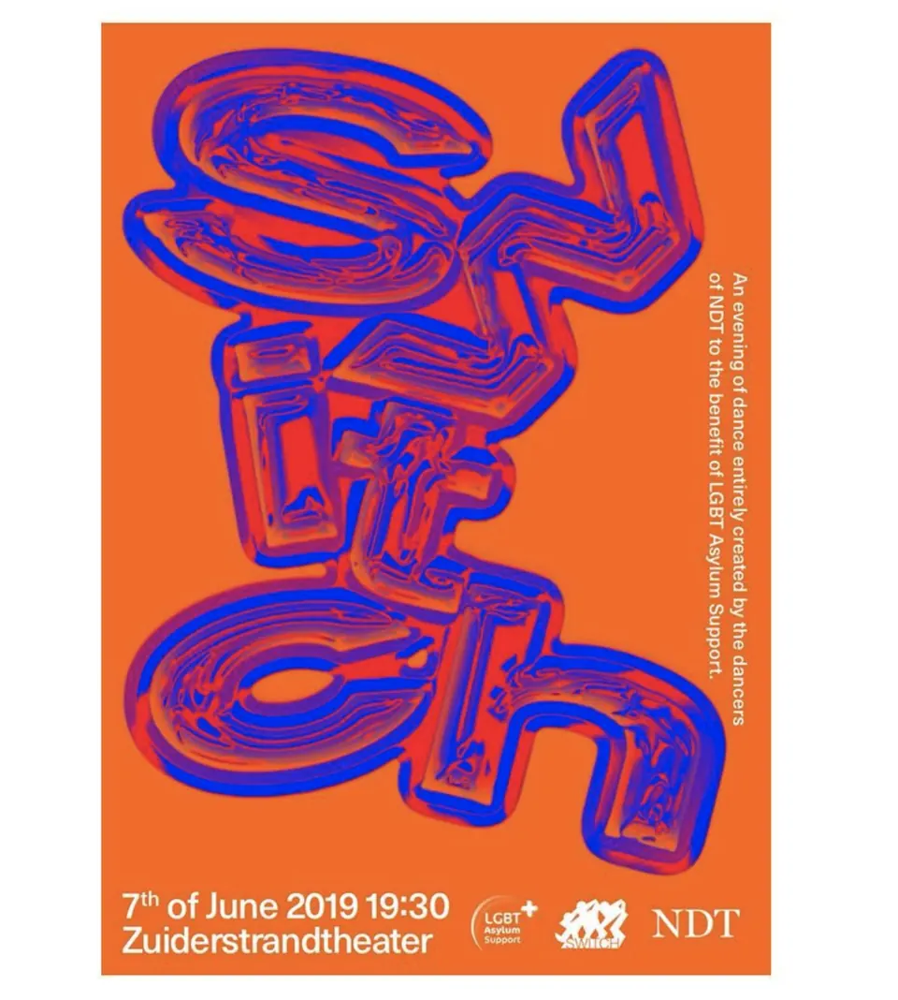
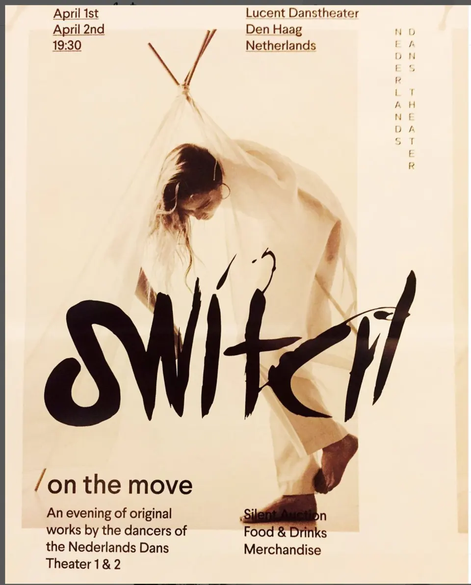
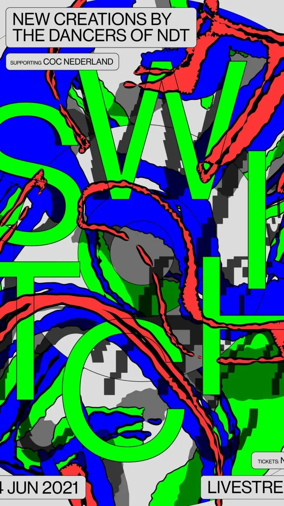
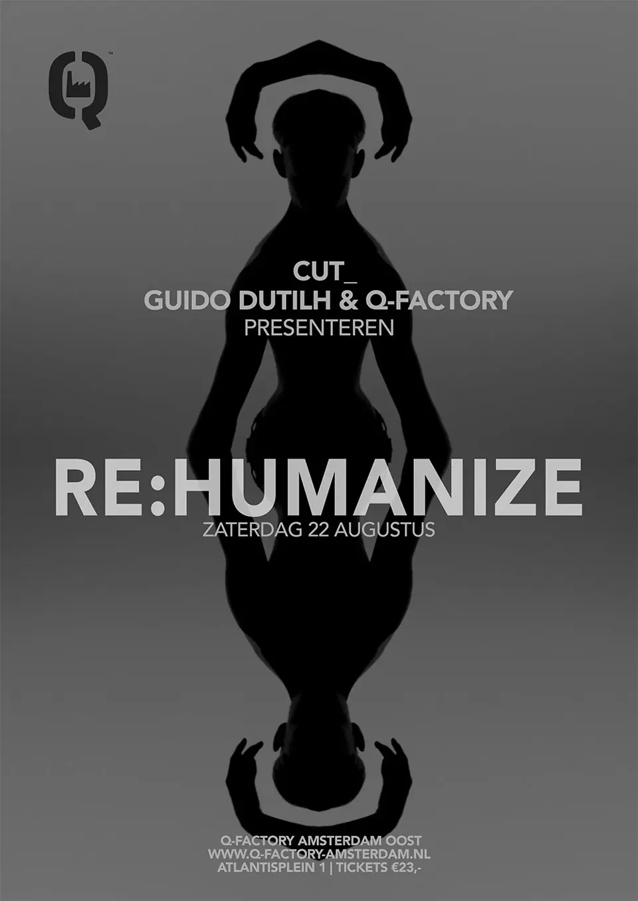
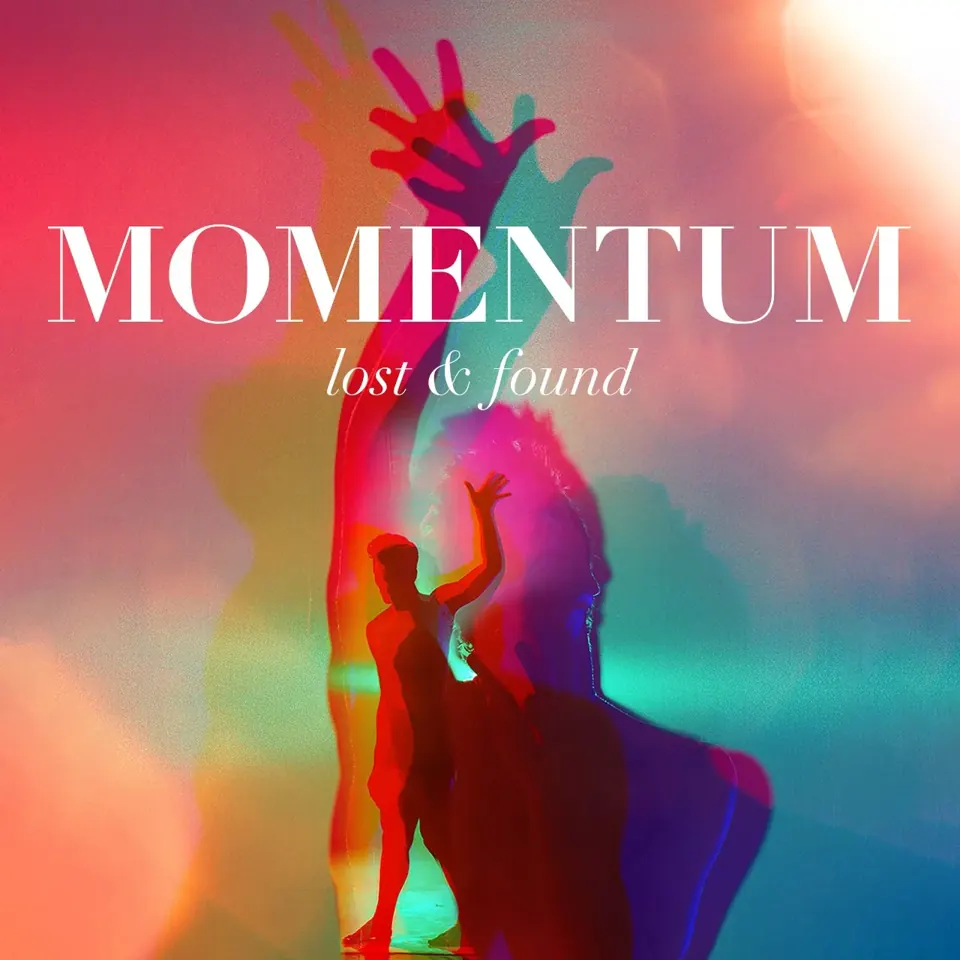
The studio
I write on a modular synthesizer I built myself. Before that I played guitar in rock and metal bands, and studied pop guitar at the Conservatorium van Amsterdam, where I now teach composition.
Sonic branding and music for ads
Ten years of music for commercials, among them Eni, Volkswagen, Swisscom and Hunkemöller.
- Sparkasse
Sonic branding and brand music
Germany - Bupa
Sonic branding
Australia - UBS
Ad music for UBS Platform
Switzerland - Philips
Ad music for Philips Steam
Netherlands - T-Mobile
Ad music
Czech Republic
Records. Four albums as CUT_, remixes and productions for others.
Listen on SpotifyAbout Sebastiaan
Since 2014 I make music with Belle Doron as CUT_: albums on PIAS and on our own label, tours through Europe and Mexico, and scores for film and stage.
Next to that I teach composition and music theory at AEMA, part of the Conservatorium van Amsterdam. The studio is on the Palmgracht in the Jordaan.
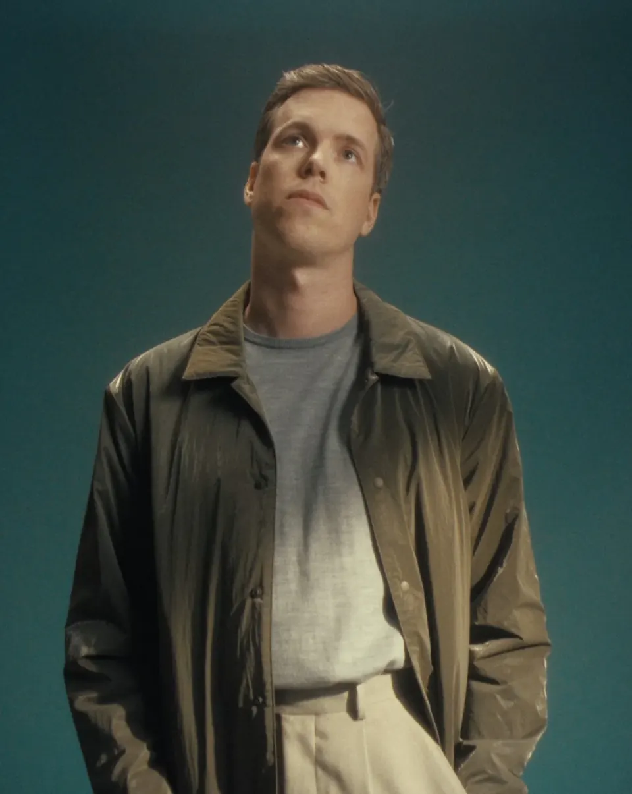